Zeitplan
| Uhrzeit | ΔT | Thema |
|---|---|---|
| 13.00 - 13.30 | 30 | Vorlesung |
| 13.30 - 13.45 | 15 | Aufgabe 10 |
| 13.50 - 14.35 | 45 | Aufgabe 11 | Aufgabe 12 |
| 14.50 - 15.05 | 15 | Input: GIS in Python |
| 15:05 - 15.35 | 30 | Aufgabe 14 |
| 15.50 - 16.25 | 35 | Aufgabe 15 |
| 16.25 - 16.35 | 10 | Wrap-up und Fragen |
Lernziele
* Wisst, warum wir diese Woche `for loops` lernen * Versteht, dass wir bisher gar nicht mit GIS Werkzeugen gearbeitet haben und warum dies jetzt aber nötig ist * Kennt die drei Hierarchiestufen von `GeopandasGeoDataFrames` * Ihr wisst, dass Python ein Vollfunktionsfähiges GIS bietet, welches sämtliche von ArcGIS bekannten Operationen zur Verfügung stellt * Ihr kennt die Anforderungen an den Leistungsnachweis für den Themenblock "Coding in GIS"Themen
- Breaking New
- Rückblick Coding in GIS II
- For Loops
- GIS in Python
- Leistungsnachweis
Conda
Vor jedem Aufstarten (in der Konsole)
- (auf diesem Computer)
conda create --name agi-envactivate agi-envcd C:\Users\rata\...conda listconda install -c conda-forge...jupyter lab
Für jedes Modul

- Vorher alle Notebooks speichern
- ersichtlich ab dem Namen in Klammern
activate agi-envconda install -c conda-forge pandas
Ein Einzelpunkt zufällig verschieben
Ein Einzelpunkt zufällig verschieben
>>> x_start = 0
>>> x_offset = random.normalvariate(0,100)
>>> x_offset
10.24617
>>> x_neu = x_start + x_offset
>>> x_neu
10.24617
>>> y_start = 0
>>> y_offset = random.normalvariate(0,100)
>>> y_offset
-4.443904
>>> y_neu = y_start + y_offset
>>> y_neu
-4.443904


Workflow > Function
def offset_coordinate(old, distance = 100):
import random
new = old +random.normalvariate(0,distance)
return new
Function > DataFrame


zeckenstiche["x"].apply(offset_coordinate)
#\______1_______/ \_2_/ \_______3_______/
- 1. Spalte selektieren
- 2. Methode "
apply" aufrufen - 3. function übergeben
zeckenstiche["x_sim"] = zeckenstiche["x"].apply(offset_coordinate)
zeckenstiche["y_sim"] = zeckenstiche["y"].apply(offset_coordinate)

zeckenstiche["x_sim"] = zeckenstiche["x"].apply(offset_coordinate, distance = zeckenstiche["accuracy"])
zeckenstiche["y_sim"] = zeckenstiche["y"].apply(offset_coordinate, distance = zeckenstiche["accuracy"])

For Loops
>>> for platzhalter in [0, 1, 2]:
>>> print("Iteration"+, platzhalter)
Iteration 0
Iteration 1
Iteration 2
>>> x_sim = []
>>> for platzhalter in range(1000):
>>> x_new <- offset_coordinate(0, 100)
>>> x_sim.append(x_new)
I'm a bitch, I'm a lover I'm a child, I'm a mother I'm a sinner, I'm a saintMeredith Brooks
GIS in Python

- Eine Geometrie
- Ein Koordinatenbezugssystem


Simple Features
In verschiedensten Systemen integriert: R (library `sf`) Datenbanken (PostGIS, MySQL…) Python (geopandas,shapely) Auch in ESRI, aber _versteckt und unzugänglich_